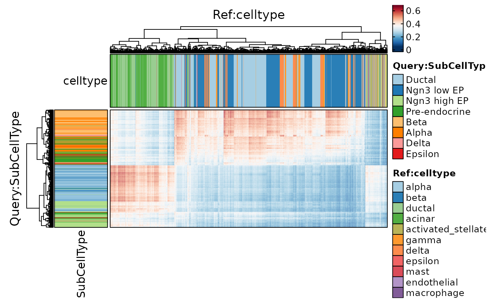
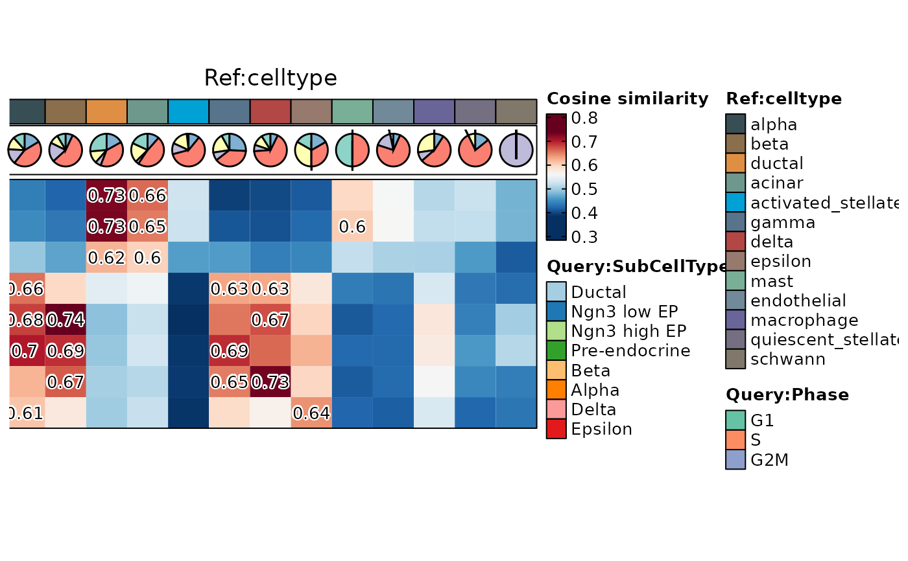
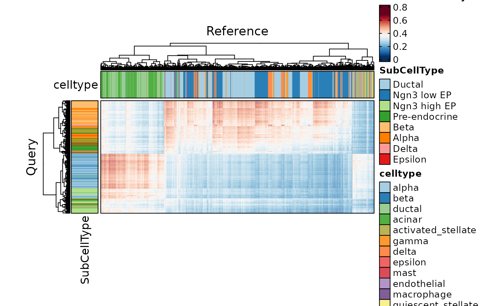
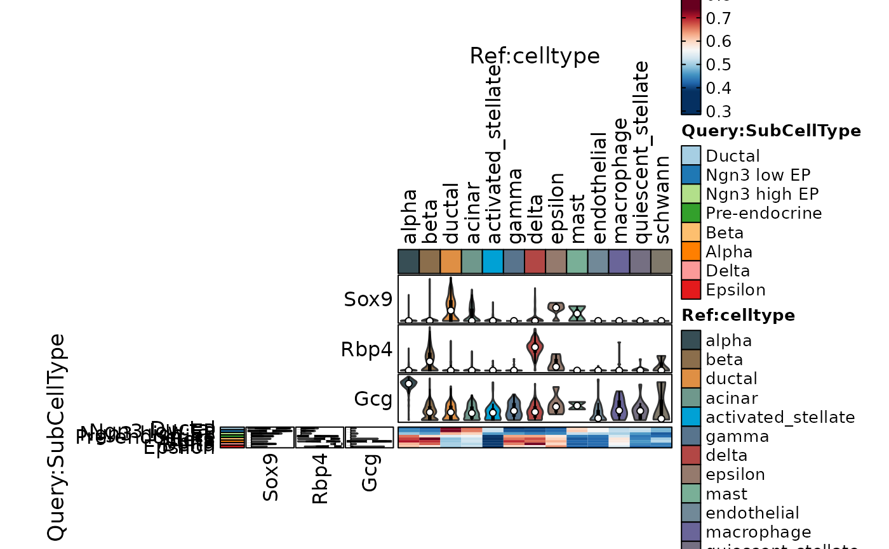

CellCorHeatmap
Usage
CellCorHeatmap(
srt_query,
srt_ref = NULL,
bulk_ref = NULL,
query_group = NULL,
ref_group = NULL,
query_assay = NULL,
ref_assay = NULL,
query_reduction = NULL,
ref_reduction = NULL,
query_dims = 1:30,
ref_dims = 1:30,
query_collapsing = !is.null(query_group),
ref_collapsing = TRUE,
features = NULL,
features_type = c("HVF", "DE"),
feature_source = "both",
nfeatures = 2000,
DEtest_param = list(max.cells.per.ident = 200, test.use = "wilcox"),
DE_threshold = "p_val_adj < 0.05",
distance_metric = "cosine",
k = 30,
filter_lowfreq = 0,
prefix = "KNNPredict",
border = TRUE,
flip = FALSE,
limits = NULL,
cluster_rows = FALSE,
cluster_columns = FALSE,
show_row_names = FALSE,
show_column_names = FALSE,
row_names_side = "left",
column_names_side = "top",
row_names_rot = 0,
column_names_rot = 90,
row_title_side = "left",
column_title_side = "top",
row_title_rot = 90,
column_title_rot = 0,
nlabel = 0,
label_cutoff = 0,
label_by = "row",
label_size = 10,
heatmap_palette = "RdBu",
heatmap_palcolor = NULL,
query_group_palette = "Paired",
query_group_palcolor = NULL,
ref_group_palette = "jama",
ref_group_palcolor = NULL,
query_cell_annotation = NULL,
query_cell_annotation_palette = "Paired",
query_cell_annotation_palcolor = NULL,
query_cell_annotation_params = if (flip) list(height = grid::unit(1, "cm")) else
list(width = grid::unit(1, "cm")),
ref_cell_annotation = NULL,
ref_cell_annotation_palette = "Paired",
ref_cell_annotation_palcolor = NULL,
ref_cell_annotation_params = if (flip) list(width = grid::unit(1, "cm")) else
list(height = grid::unit(1, "cm")),
use_raster = NULL,
raster_device = "png",
raster_by_magick = FALSE,
height = NULL,
width = NULL,
units = "inch",
seed = 11,
ht_params = list()
)Examples
data("pancreas_sub")
pancreas_sub <- Standard_SCP(pancreas_sub)
#> [2023-03-30 04:04:36] Start Standard_SCP
#> [2023-03-30 04:04:36] Checking srtList... ...
#> Data 1/1 of the srtList is raw_counts. Perform NormalizeData(LogNormalize) on the data ...
#> Perform FindVariableFeatures on the data 1/1 of the srtList...
#> Use the separate HVF from srtList...
#> Number of available HVF: 2000
#> [2023-03-30 04:04:37] Finished checking.
#> [2023-03-30 04:04:37] Perform ScaleData on the data...
#> [2023-03-30 04:04:37] Perform linear dimension reduction (pca) on the data...
#> [2023-03-30 04:04:38] Perform FindClusters (louvain) on the data...
#> [2023-03-30 04:04:38] Reorder clusters...
#> [2023-03-30 04:04:39] Perform nonlinear dimension reduction (umap) on the data...
#> Non-linear dimensionality reduction(umap) using Reduction(Standardpca, dims_range:1-50) as input
#> Non-linear dimensionality reduction(umap) using Reduction(Standardpca, dims_range:1-50) as input
#> [2023-03-30 04:04:46] Standard_SCP done
#> Elapsed time: 10 secs
ht1 <- CellCorHeatmap(srt_query = pancreas_sub, query_group = "SubCellType")
#> Use the HVF to calculate distance metric.
#> Use 2000 common features to calculate distance.
#> Detected query data type: log_normalized_counts
#> Detected reference data type: log_normalized_counts
#> Calculate similarity...
#> Use 'raw' method to find neighbors.
#> Predict cell type...
ht1$plot

data("panc8_sub")
# Simply convert genes from human to mouse and preprocess the data
genenames <- make.unique(capitalize(rownames(panc8_sub), force_tolower = TRUE))
panc8_sub <- RenameFeatures(panc8_sub, newnames = genenames)
#> Rename features for the assay: RNA
panc8_sub <- check_srtMerge(panc8_sub, batch = "tech")[["srtMerge"]]
#> [2023-03-30 04:04:49] Spliting srtMerge into srtList by column tech... ...
#> [2023-03-30 04:04:50] Checking srtList... ...
#> Data 1/5 of the srtList is raw_normalized_counts. Perform NormalizeData(LogNormalize) on the data ...
#> Perform FindVariableFeatures on the data 1/5 of the srtList...
#> Data 2/5 of the srtList is raw_normalized_counts. Perform NormalizeData(LogNormalize) on the data ...
#> Perform FindVariableFeatures on the data 2/5 of the srtList...
#> Data 3/5 of the srtList is raw_normalized_counts. Perform NormalizeData(LogNormalize) on the data ...
#> Perform FindVariableFeatures on the data 3/5 of the srtList...
#> Data 4/5 of the srtList is raw_counts. Perform NormalizeData(LogNormalize) on the data ...
#> Perform FindVariableFeatures on the data 4/5 of the srtList...
#> Data 5/5 of the srtList is raw_counts. Perform NormalizeData(LogNormalize) on the data ...
#> Perform FindVariableFeatures on the data 5/5 of the srtList...
#> Use the separate HVF from srtList...
#> Number of available HVF: 2000
#> [2023-03-30 04:04:54] Finished checking.
ht2 <- CellCorHeatmap(
srt_query = pancreas_sub, srt_ref = panc8_sub, nlabel = 3, label_cutoff = 0.6,
query_group = "SubCellType", ref_group = "celltype",
query_cell_annotation = "Phase", query_cell_annotation_palette = "Set2",
ref_cell_annotation = "tech", ref_cell_annotation_palette = "Set3",
width = 3, height = 2
)
#> Use the HVF to calculate distance metric.
#> Use 631 common features to calculate distance.
#> Detected query data type: log_normalized_counts
#> Detected reference data type: log_normalized_counts
#> Calculate similarity...
#> Use 'raw' method to find neighbors.
#> Predict cell type...
#> The size of the heatmap will be fixed as some elements are not scalable.
ht2$plot

ht3 <- CellCorHeatmap(
srt_query = pancreas_sub, srt_ref = panc8_sub,
query_group = "SubCellType", query_collapsing = FALSE, cluster_rows = TRUE,
ref_group = "celltype", ref_collapsing = FALSE, cluster_columns = TRUE
)
#> Use the HVF to calculate distance metric.
#> Use 631 common features to calculate distance.
#> Detected query data type: log_normalized_counts
#> Detected reference data type: log_normalized_counts
#> Calculate similarity...
#> Use 'raw' method to find neighbors.
#> Predict cell type...
ht3$plot

ht4 <- CellCorHeatmap(
srt_query = pancreas_sub, srt_ref = panc8_sub,
show_row_names = TRUE, show_column_names = TRUE,
query_group = "SubCellType", ref_group = "celltype",
query_cell_annotation = c("Sox9", "Rbp4", "Gcg"),
ref_cell_annotation = c("Sox9", "Rbp4", "Gcg")
)
#> Use the HVF to calculate distance metric.
#> Use 631 common features to calculate distance.
#> Detected query data type: log_normalized_counts
#> Detected reference data type: log_normalized_counts
#> Calculate similarity...
#> Use 'raw' method to find neighbors.
#> Predict cell type...
ht4$plot
